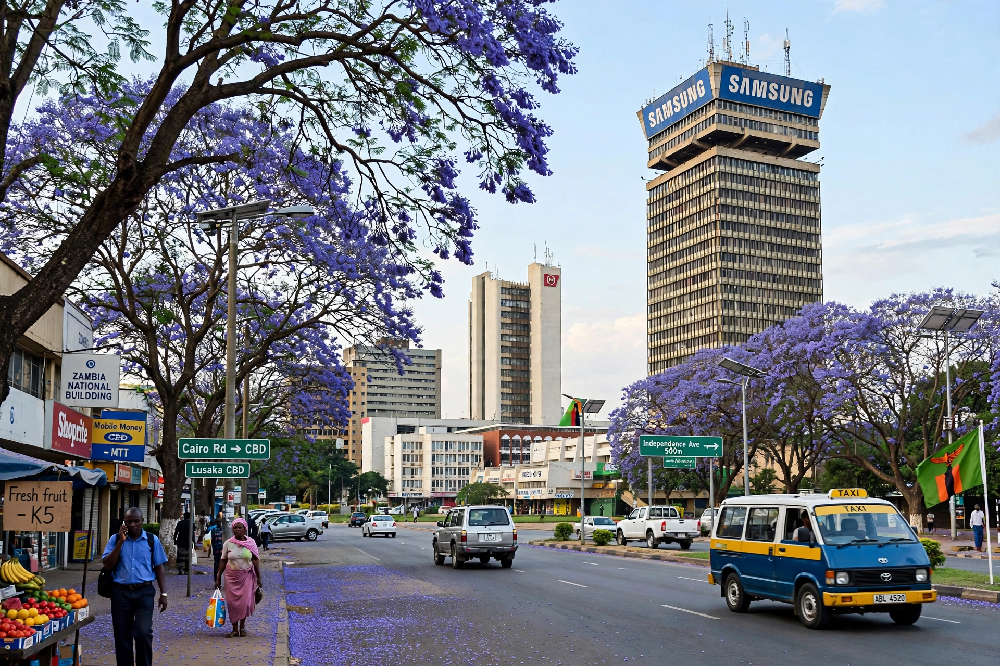

[Image placeholder: Downtown Lusaka, with the Findeco House tower]| Country | Zambia |
|---|---|
| Population | About 3.3 million (metro estimates) |
| Elevation | About 1,280 m |
| Status | Capital since 1935 (of Northern Rhodesia, then Zambia) |
**Lusaka** is the capital and largest city of Zambia, on the plateau of the country's south-central region. Named after a headman Lusaaka of the Soli people, it was a railway siding founded in 1905 and became capital of British Northern Rhodesia in 1935, then of independent Zambia in 1964. It has grown into one of Africa's fastest-expanding cities.
Lusaka was the base of liberation movements for the region (hosting the ANC and ZANU exiles during the Rhodesian and apartheid struggles). Landmarks are modest — the National Museum, the Cathedral of the Holy Cross, Manda Hill and Eastpoint malls, and vast markets — while most residents live in sprawling 'compounds' (townships) such as Kanyama and Chibolya. Cholera and flooding strike the peri-urban settlements in rainy seasons.
Government, services, construction and informal trade dominate; Lusaka is the hub of Zambia's road network and its Kenneth Kaunda International Airport. The city's growth far outpaces formal housing and services, with most employment informal.